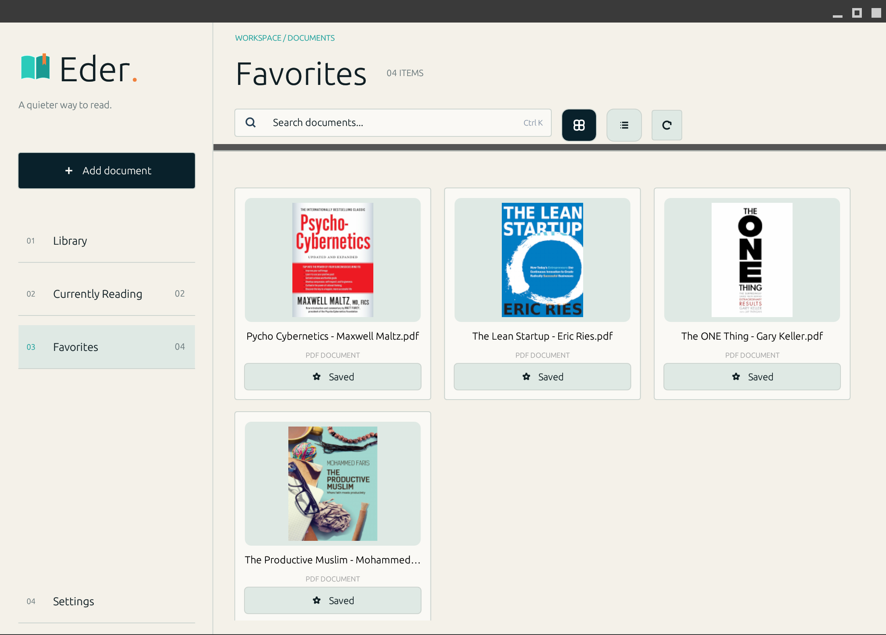

Keep your folders.
Choose a folder and browse your books and subfolders just as you organized them on your computer.
↗A quieter way to read.
Eder is a desktop PDF reader designed for people who love collecting and reading books. Browse your existing folders, keep your collection organized, and pick up right where you left off — all without moving your books or uploading them anywhere.
Explore Eder ↗
Your collection is already on your computer. Eder gives it a familiar place to browse and read — with the folders you know and your reading progress saved.
Choose a folder and browse your books and subfolders just as you organized them on your computer.
↗Recognize books by their first-page previews instead of searching through filenames alone.
↗Your reading progress is saved, so you can return to a book without finding your page again.
↗Put the books you want to revisit in your favorites for easy access.
↗Zoom in when you need to, scroll through pages, and read at your own pace.
↗A dedicated desktop space for your PDF books, separate from browser tabs and everyday distractions.
↗Browse the folder structure you already use. Find a book, open it, and continue reading. Your collection stays on your computer.
Your bookshelf starts with the PDF books already on your computer. Eder follows your folder organization and keeps your reading progress locally, so you can focus on reading instead of managing files.
Start your library ↗Eder began with a simple goal: a comfortable way to read a personal ebook collection on Linux. Under the hood, it uses Rust and desktop-focused tools.
Native application logic.
GPU-backed desktop interface.
Local preferences and progress.
PDF page and preview rendering.
Bring your PDF collection into one familiar reading space. Download Eder 0.1.0 for Linux (x86-64), or visit GitHub for source code and release details.